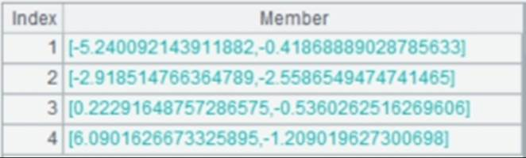
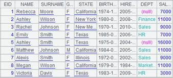

Description:
Switch the values of the reference field between the corresponding key values and the referenced records, or, sometimes switch between them in a reverse direction.
Syntax:
P.switch(Fi, Ai:x;¡)
Note:
The function enables Fi to switch between the corresponding key values, which refers to the primary key value of the referenced record in Ai, and the referenced records of Ai; , and returns a table sequence.
Take the Attendance table as an example. The employeeID field may store either the corresponding primary key values of employeeID or the referenced records in Employee table. So, the switch() function can be used to switch between the two objects.
Use the index table of the foreign key if any and create one if unavailable.
Parameter:
|
P |
A table sequence/record sequence |
|
Fi |
The key of P; when Ai:x;¡ is omitted, Fi stores the records of the referenced table Ai; they can be replaced by Ai¡¯s primary key values through the function |
|
Fi, Ai |
When Ai is available, Fi is the reference field of P, which stores corresponding primary key values; the function is used to switch them to the referenced records; the matching condition is that Fi is equal to the primary key value of Ai; use null to represent a missing record |
|
Fi, Ai:x |
When both parameter Ai and the primary key x are available, get the first record from Ai in which value x is equal to Fi and make it the value of Fi field; if x is #, locate the records directly through the sequence numbers |
Option: (Available for Fi, Ai and Fi, Ai:x)
|
@i |
Delete the records where no value corresponding to F is found during the matching |
|
@d |
Perform the inverse operation of @i, which obtains the records that have no value corresponding to F; with the option do not populate F with nulls |
|
@1 |
If the specified F field value of a specified record in sequence P doesn¡¯t exist in sequence B, generate a record of the same structure as one in B with F field as the primary key |
Return value:
Table sequence
Example:
|
|
A |
|
|
|
|
1 |
=demo.query("select * from DEPARTMENT").keys(DEPT) |
|
|
|
|
2 |
=demo.query("select * from EMPLOYEE where EID < 10") |
|
|
|
|
3 |
=demo.query("select * from DEPARTMENT" ).cursor().memory().keys(DEPT) |
Return an in-memory table. |
|
|
|
4 |
>A2.switch(DEPT,A1:DEPT) |
 |
|
|
|
5 |
>A2.switch(DEPT,A3:DEPT) |
A3 is an in-memory table; the result is the same as above. |
|
|
|
6 |
>A2.switch(DEPT) |
Switch records of A2 corresponding to "DEPT " to field values |
|
|
|
7 |
>A2.switch@i(DEPT,A1) |
Delete this record if no value corresponding to DEPT is found. |
|
|
|
8 |
>A2.switch@d(DEPT,A1) |
Obtain records that have no values corresponding to DEPT. |
||
|
9 |
>A1.delete(6) |
|
||
|
10 |
=A2.switch(DEPT,A2:DEPT) |
 |
||
|
11 |
=A2.switch@1(DEPT,A2:DEPT) |
|
||

Related function: